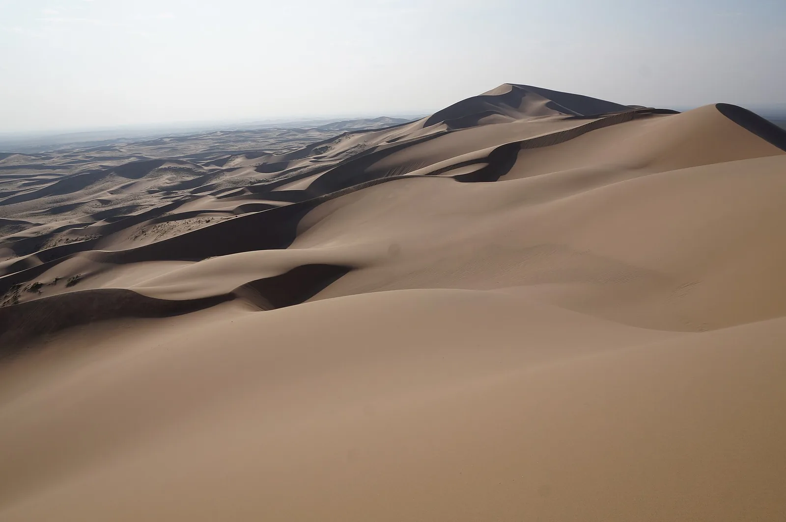

OV4 · Otros vuelos
OV4 · Andere Flüge
OV4 · Other flights
Desierto de Gobi
Información
La Gran Reserva de Biosfera del Gobi, en el suroeste de Mongolia, sobre el límite con China, es una de las áreas protegidas más grandes del mundo: 6.839.160 hectáreas en total. Sólo su parte A ocupa unos 4,6 millones de hectáreas, y la parte B otros 0,9 millones. Juntas superan la superficie de Suiza.
Se declaró Área Estrictamente Protegida en 1975 y entró a la Red Mundial de Reservas de Biosfera en 1991. Representa a los desiertos de Asia Central.
Ahí viven el leopardo de las nieves, el íbice siberiano, el oso del Gobi, el asno salvaje asiático, el argalí y la gacela de bocio. Es además uno de los tres últimos lugares del planeta donde todavía queda el camello bactriano salvaje.
Information
La Gran Reserva de Biosfera del Gobi, en el suroeste de Mongolia, sobre el límite con China, es una de las áreas protegidas más grandes del mundo: 6.839.160 hectáreas en total. Sólo su parte A ocupa unos 4,6 millones de hectáreas, y la parte B otros 0,9 millones. Juntas superan la superficie de Suiza.
Se declaró Área Estrictamente Protegida en 1975 y entró a la Red Mundial de Reservas de Biosfera en 1991. Representa a los desiertos de Asia Central.
Ahí viven el leopardo de las nieves, el íbice siberiano, el oso del Gobi, el asno salvaje asiático, el argalí y la gacela de bocio. Es además uno de los tres últimos lugares del planeta donde todavía queda el camello bactriano salvaje.
Information
La Gran Reserva de Biosfera del Gobi, en el suroeste de Mongolia, sobre el límite con China, es una de las áreas protegidas más grandes del mundo: 6.839.160 hectáreas en total. Sólo su parte A ocupa unos 4,6 millones de hectáreas, y la parte B otros 0,9 millones. Juntas superan la superficie de Suiza.
Se declaró Área Estrictamente Protegida en 1975 y entró a la Red Mundial de Reservas de Biosfera en 1991. Representa a los desiertos de Asia Central.
Ahí viven el leopardo de las nieves, el íbice siberiano, el oso del Gobi, el asno salvaje asiático, el argalí y la gacela de bocio. Es además uno de los tres últimos lugares del planeta donde todavía queda el camello bactriano salvaje.
La reserva alberga al oso del Gobi —el mazaalai—, una subespecie de oso pardo en peligro crítico que sólo vive acá: es el único oso del mundo adaptado a vivir en un desierto.
Las presiones sobre el ecosistema del Gobi son la desertificación asociada al cambio climático, el aumento de inviernos extremos que matan al ganado, y la caza furtiva.
La reserva alberga al oso del Gobi —el mazaalai—, una subespecie de oso pardo en peligro crítico que sólo vive acá: es el único oso del mundo adaptado a vivir en un desierto.
Las presiones sobre el ecosistema del Gobi son la desertificación asociada al cambio climático, el aumento de inviernos extremos que matan al ganado, y la caza furtiva.
La reserva alberga al oso del Gobi —el mazaalai—, una subespecie de oso pardo en peligro crítico que sólo vive acá: es el único oso del mundo adaptado a vivir en un desierto.
Las presiones sobre el ecosistema del Gobi son la desertificación asociada al cambio climático, el aumento de inviernos extremos que matan al ganado, y la caza furtiva.
Fuentes
Quellen
Sources
- UNESCO, Programa el Hombre y la Biosfera (MAB), Great Gobi Biosphere Reserve — https://www.unesco.org/en/mab/great-gobi
Galería
Galerie
Gallery


Fuentes
Quellen
Sources
- UNESCO, Programa el Hombre y la Biosfera (MAB), Great Gobi Biosphere Reserve — https://www.unesco.org/en/mab/great-gobi consultado 2026-10-06abgerufen 2026-10-06accessed 2026-10-06